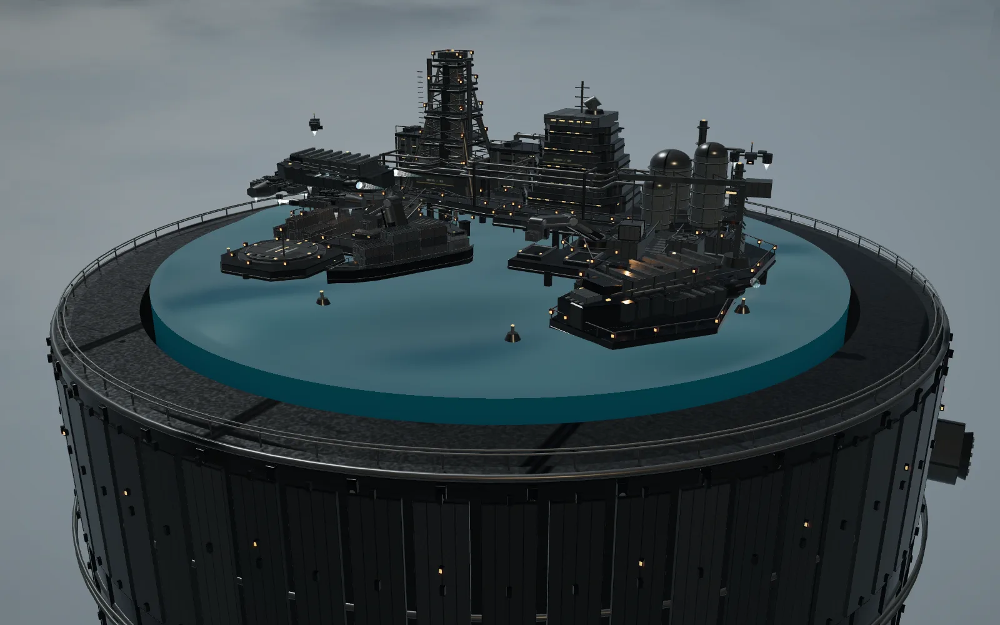
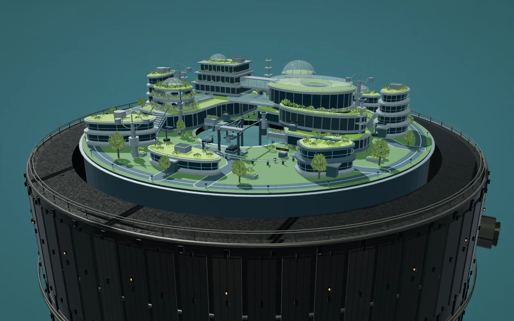
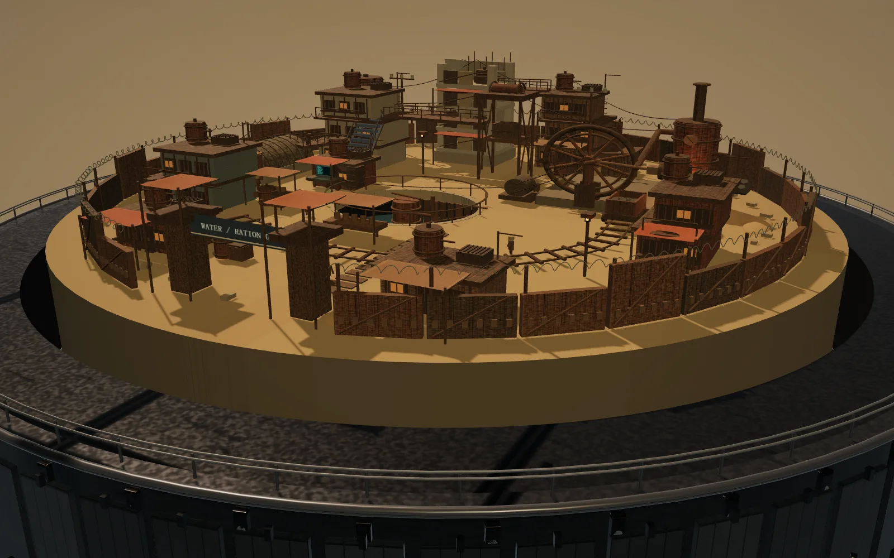

Nexus 2086
Three worlds on one flipping cylinder: an industrial harbour, an ecology research park and a wasteland ration station, every building, machine and texture generated in code.
Project Overview
A tabletop diorama on top of a giant cylinder. Flip the disc and it turns 180° in place to reveal the next world, cycling harbour → ecology park → wasteland. Each world runs on its own: ships are unloaded, carts shuttle, machines turn. It is a single three.js page. Apart from the library itself, nothing is loaded: no models, no image textures, no concept art in the background.
Three Worlds
Harbour · Sector 07: a freighter, container cranes, transport boats and searchlights, with a weather system that cycles through clear, sea breeze, thunderstorm and winter snow with local icing.
Ecology Park · Eden 12: terraced buildings linked by walkways, a glass roof that opens, evenly spaced carts on a twin track, and an automatic transfer from the shore down to an underwater receiving platform. The central pool has its own gentle standing waves and splash ripples, and the harbour's storms never reach it.
Wasteland · Cinder 09: patched-together housing, a broken concrete block, an arched workshop, a ration well and a steam power station. A flywheel, a fixed-length connecting rod and a slider drive a cargo lift and a mine cart; main power, the water pump and the gate can each be switched on their own.
How It's Built
All geometry, materials, screens and sheet-metal textures are generated in code, with repeated parts drawn as instanced meshes. The machinery is kinematically constrained rather than keyframed: the slider position is solved from the crank radius and rod length, the lift travels between fixed heights with dwell time at each end, and pausing main power freezes the whole linked train while the pump and gate keep running. A test script flips the disc twelve times in a row and checks the scene order, that the model returns upright, the axis height, the transport cycles and the rod length.
In XR
On a laptop you orbit with the mouse and zoom with the wheel. On a WebXR device the same page enters immersive mode, and a controller ray flips the disc and changes time of day and weather. So far it has been tested in desktop browsers only, not on real headset hardware.
Gallery


